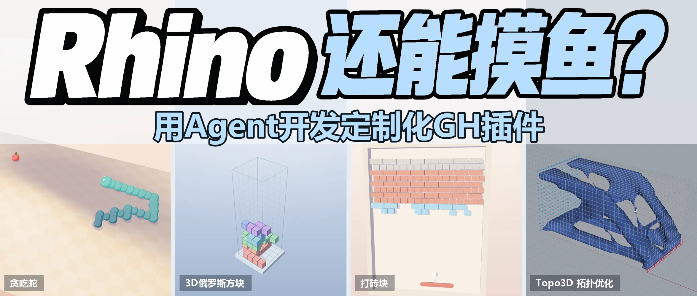
Agent 开发实录Building with AI agents
一行代码不写，用 Agent 开发 Grasshopper 插件Building a Grasshopper Plug-in with an AI Agent, Without Writing a Line of Code
从拓扑优化到 Rhino 摸鱼游戏，分享我一行代码没写，用 Agent 开发、测试并发布定制化 GH 插件的过程。From topology optimization to games inside Rhino: how I used an AI agent to build, test and publish a custom Grasshopper plug-in without writing code.
嗨喽朋友们大家好，上次分享了用 AI 加 Rhino MCP，直接在 Rhino 里建模提升效率。其实 AI 更加强大，我们完全可以使用 Agent 来帮我们开发定制化的 GH 或者 RH 插件，满足日常工作中的功能需求。
这次就分享一下，我是怎么一行代码没写、一张图没做，纯许愿式、聊天式地用 Agent 开发了一个小插件 Moyu（摸鱼）。这个插件一半是正经的 2D、3D 拓扑优化，另一半是在 Rhino 里玩的摸鱼小游戏，还带老板键，可以瞬间切换游戏和工作界面。开发途中，代码、测试、图标、文档以及发布全都交给 AI，下面我就分享一下过程。
拓扑优化
前期 Prompt
我先建了一个空的 GitHub 仓库，在 Claude Code 里选中本地项目文件夹。准备的环境是 Windows 上的 Rhino 8 和 Grasshopper，我预期从 Rhino 的 GH 模板开始开发；因为之前接过 Rhino MCP，所以 Agent 也可以方便地打开软件、操作和检查结果。这次主要用的模型是 Opus 5.5 Extra。
我之前写过类似的拓扑优化插件，所以大致知道自己需要什么。这次特意让它独立实现，先从 2D pixel 开始，再往 3D voxel 扩展。下面是我当时已经提交的需求。原话其实很口语，也有拼写错误，但是 AI 还是很擅长整理信息的。
我想你帮我使用rhino GH开发模版 写一个运算拓扑优化的插件 先从2D pixel工作流开始 2D放在一个category里 有Load support boundary area matrerial之类的限制conditionde components 然后所有这些condition 都被放入一个solver里进行运算 这个solver是被trigger进行驱动的 所有的comoponent先不画icons 你到时候整理一个prompt 我用来在gpt里创建icons （不要参考我的论文torchsharp）solver之后 再加一个visuliaztion的component来显示结果
这段需求里，最有用的是把整个工作流拆出来：Boundary 定义设计区域，Load 和 Support 放荷载与支撑，Area 指定保留或挖空的区域，Material 放材料参数；这些条件交给 Solver 运算，再由 Visualization 显示结果。 Solver 用 Trigger 驱动，方便一轮一轮地观察变化。
第一轮先把功能做通，icons 后面单独处理。我让 Claude Code 整理每个元件的用途，再交给 Codex 做图标。只让 Claude Code 说明元件功能和蓝白、蓝紫的色调，生成 Prompt，然后把 Prompt 喂给 Codex，让它自己设计。最后再让 Agent 切成 GH 要用的透明小图标，放进插件里。
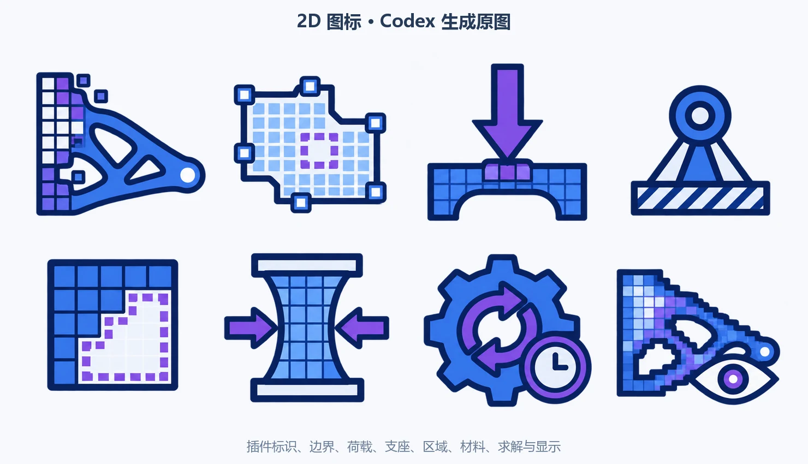
还有一个我做完第一轮才补上的要求：把测试用的 GH 文件也做好。光有一堆组件，我还得自己接线、猜参数；让它连好完整案例并写上注释，我打开后就能直接测试。
编译与打开案例文件
Agent 会先查看仓库和 GH 模板，拆分条件组件、SIMP 求解器和可视化，再写代码、自动编译、跑检查，最后整理工作流报告和图标 Prompt。前后大概一小时，2D 部分已经能用，测试案例也准备好了。
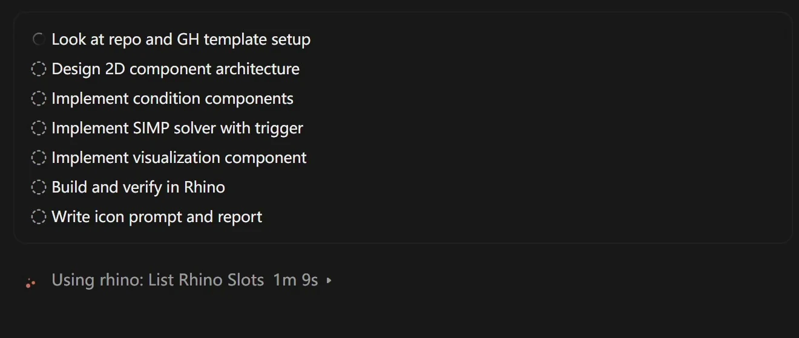
Agent 会自动写码、自动编译，生成 .gha。想使用这个文件，需要让 Grasshopper 找得到它。我们可以手动把插件复制到 GH 的 Libraries 目录下，也可以在 Rhino 命令行里输入 GrasshopperDeveloperSettings，把编译输出目录加到 Library Folders。GH 启动时会去这些目录里找插件并加载，就不用每次编译完都重新拷贝了。
本期项目的输出目录，相对于仓库根目录是下面这个路径。设置时要选你电脑上对应的完整目录，再重启 Rhino：
src\Moyu\bin\Release\net7.0-windows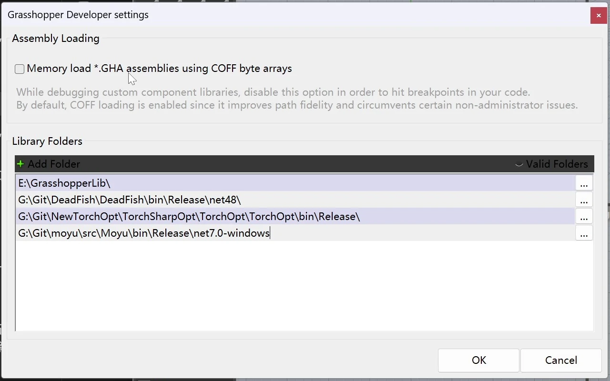
这里我已经打开了写好的 GH 测试文件，这个文件也是 Agent 自己写好的。
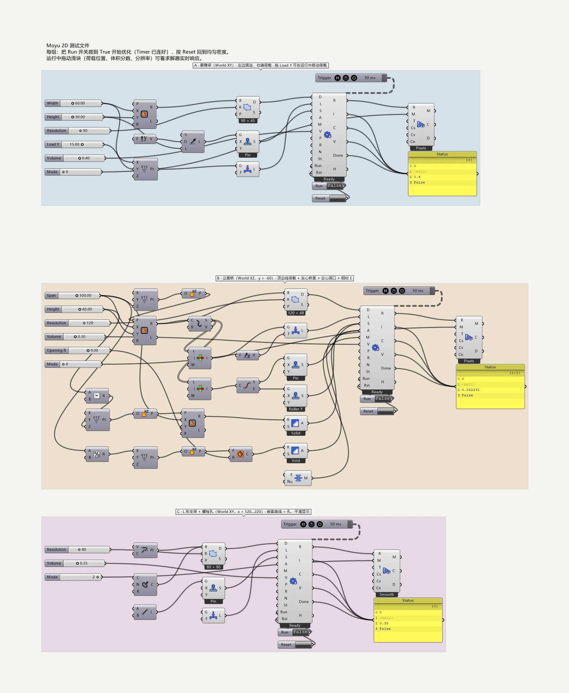
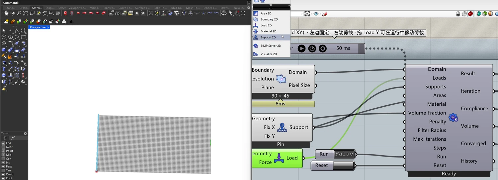
2D 拓扑优化结果
拓扑优化可以先这样理解：给定一个允许放材料的区域，再告诉它哪里固定、哪里受力，以及允许使用多少材料，让求解器寻找合适的材料分布。
第一个案例是悬臂梁：一块矩形区域，左端固定，另一端放荷载。把 Run 打开，它会随着 Trigger 推进迭代。也可以改成手动、把 Steps 设成 1，一次看一步。刚开始是均匀的灰色像素，随后能看见材料逐渐集中，形成几条比较清楚的路径。
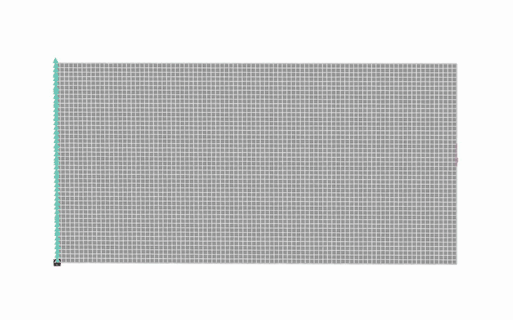
第二个案例加了孔洞、保留区和不同的支撑，一边是 pin，一边是 roller。Area 可以规定哪些地方必须留下，哪些地方不能长材料。中间有洞，结果就会绕着洞重新组织；上面长出类似树杈的分支，下面还有拉结。
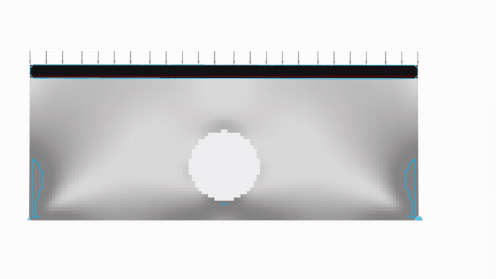
第三个是带螺栓孔的异形 L 支架。同样先给边界、支撑和荷载，再看优化结果。它不只输出彩色像素，也可以提取轮廓曲线，后面继续做面、挤出，接回自己的建模流程。这样的工具适合拿来做机械零件或结构概念的探索。
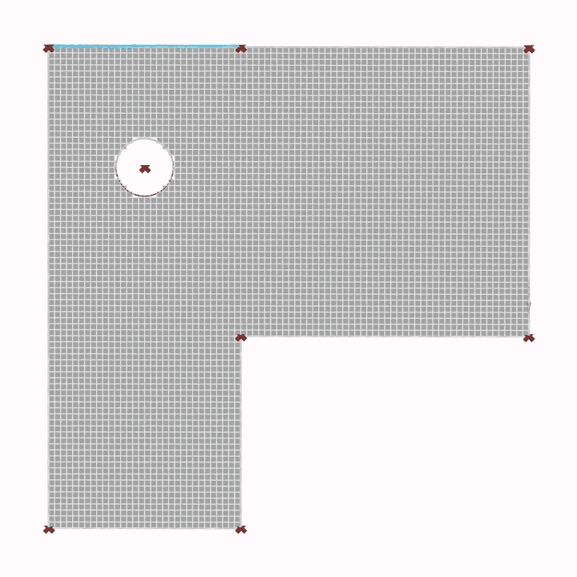
这一轮的整体结果，我看着确实很震撼。在大约一个小时的开发中，AI 不仅完整地写出了 2D 部分，还做了很有代表性的测试案例，这种智能程度让人感叹。
3D 拓扑优化：流程相同，pixel 换成 voxel
2D 跑通后，我再让它扩展到 3D，继续沿用条件 → Solver → 显示的结构，同时做好三维测试文件和图标。这一次设计域变成封闭的实体，材料也从 pixel 换成 voxel。
同样的过程，先让 Agent 开发，再生成 3D 元件的图标和测试文件。
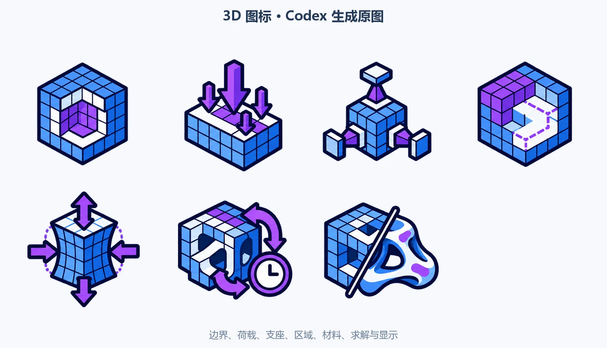
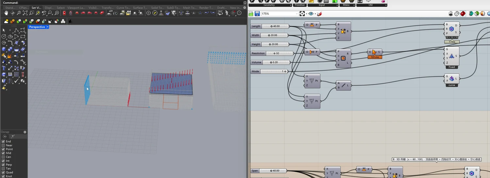
这里 Agent 也是照例给了三个例子。第一个是三维悬臂梁，优化效果如下，可以看到结构逐步显示出来。
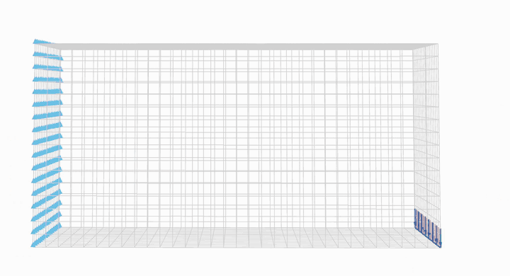
第二个案例是对桌子支撑的优化，指定要保留的部分，其他地方让它优化。状态里显示这一例跑到 35 轮收敛，最后留下了这样树状的支撑。
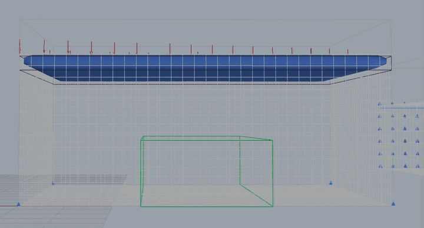
L 形支架也能跑。把 Resolution 提高，结果会更细，运算也会变慢。现在这套插件适合学习和概念探索，实际工程仍需要专门的分析与验证。当然，这里只是第一轮开发，已经达到这个程度，真是很厉害了。如果换成人手写开发，不知道要多久。
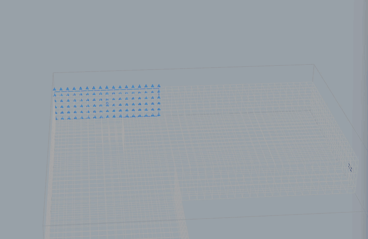
接下来，在 Rhino 做摸鱼游戏
拓扑优化是比较正经的需求。接下来我想试一个更定制、也更天马行空的需求：做一些在 Rhino 里玩的摸鱼游戏。
第一个游戏，我想到三维的俄罗斯方块。我交代了几个核心要求：默认有一套积木，也允许用户自己画体素 Unit；一层堆满就消掉、计分；用键盘操作；最重要的是，要有个老板键，按一下就切成看起来在研究建筑体块的界面。其他细节先让它规划，但要做得好玩。
现在我做一些在rhino里摸鱼的游戏 这些游戏都是以GH plug-in形式存在 也就说在moyu下再多开几个categories来做 第一个我想做的游戏是3D体素消除游戏 类似于俄罗斯方块 不过是3d版本 交互方式也许是 系统会自带一些默认的体素块 类似于平面的俄罗斯方块 L型 I型 之类的 但是用户也可以自己画一些由标准voxel堆砌出来的体素unit 反正每次每一层堆满就消除 基本原理还是和俄罗斯方块相同 也需要计分 最好是用键盘在操作移动 你计划一下 最重要的是这是一个摸鱼时间玩的游戏 所以要有老板键 可以快速切换成假装在做massing 形体研究的状态 具体细节你来安排 但是要有趣好玩
按当时的开发记录，从提出想法到第一版能玩，Agent 用了约 1 小时 13 分钟：其中出方案约 31 分钟，开发到可玩的 v1 约 42 分钟。这里统计的是 Agent 的执行阶段，没有把我自己看结果、试玩和思考下一步的时间全算进去。
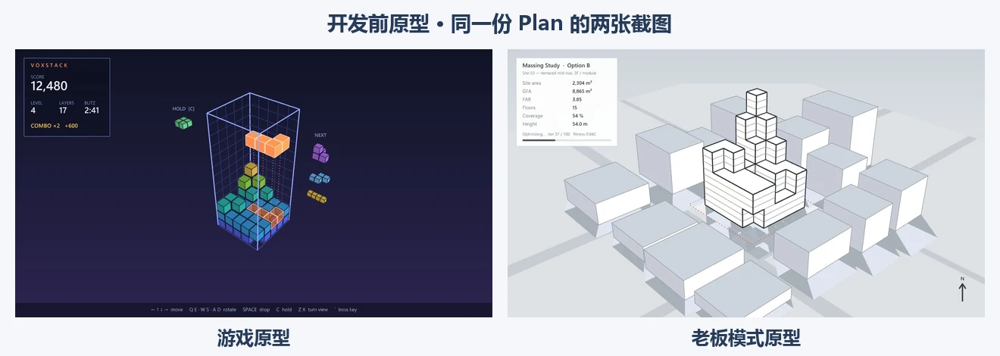
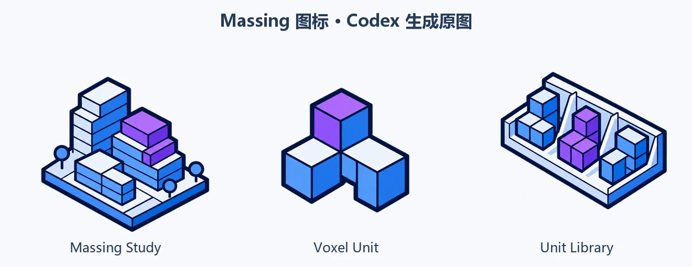
第一轮正式试玩已经能转积木、下落、消层。最开始我觉得三维旋转有点复杂，下落也偏快，熟悉一会儿才成功消掉一层。后来又继续改界面和操作，现在除了键盘，也加了 Rhino 用户熟悉的 Gumball，拖圆环就能旋转。
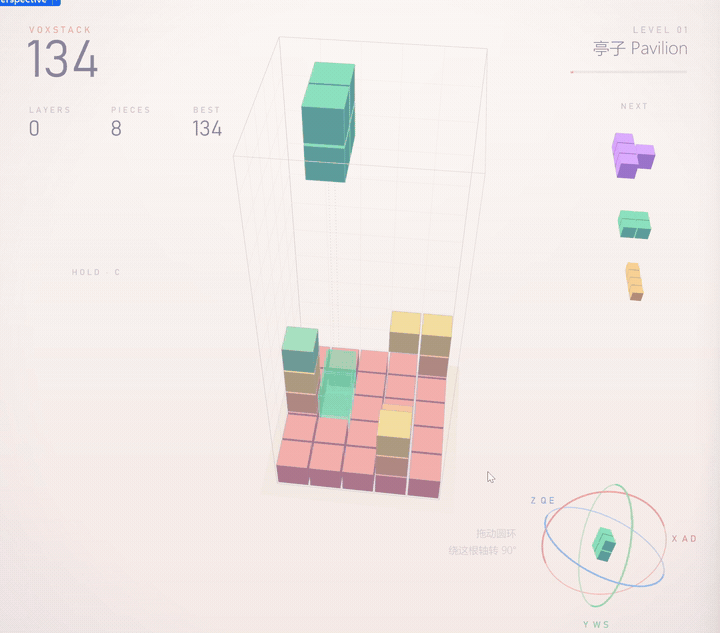
这个也可以接入自定义 Unit。自己画好体块，再接到 Voxel Unit 和 Unit Library，就可以把它加入积木库。
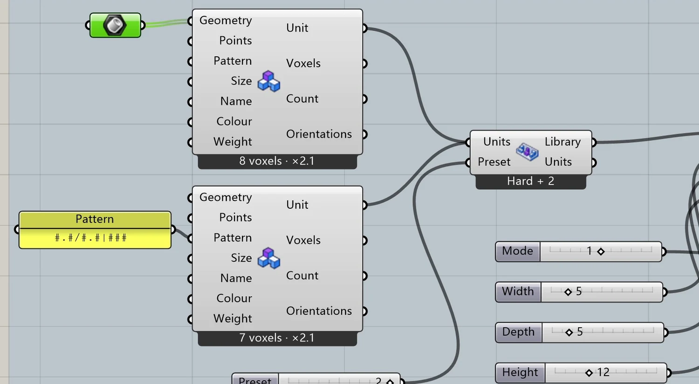
按下老板键 `，也就是 Esc 下面、数字 1 左边的那个键，就会自动切换成体量研究界面，伪装成还在认真工作。再按一次回游戏。四款共用这个思路，只是对应的工作画面不同。这些界面本身也是游戏设计的一部分。
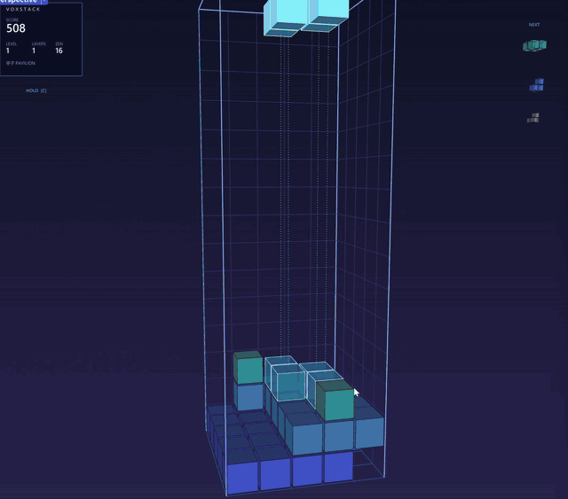
又加了三款游戏
后面几天断断续续，利用闲暇时间，我又继续加了三款。它们都在 Rhino 视口运行，也都有各自的“工作界面”。
Serpentine 蜿蜒：曲面上的贪吃蛇
默认是起伏的地形，也可以接自己的 Surface。水果有不同分值，还能连吃加分、加速。按 C 可以切换第一人称跟随视角和看整个地形的自由视角。
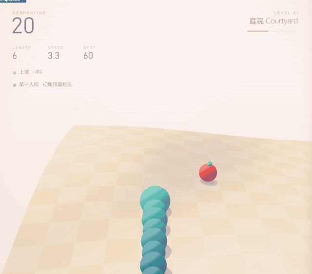
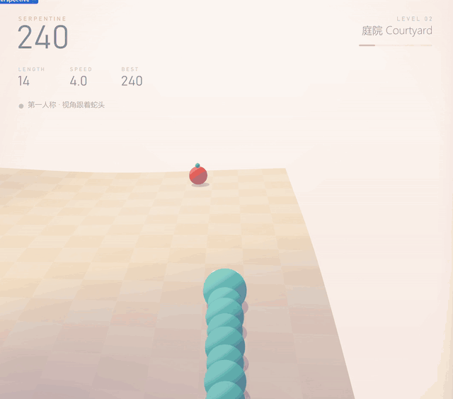
按下老板键，游戏切成景观研究：地形、步道、树和分析图。
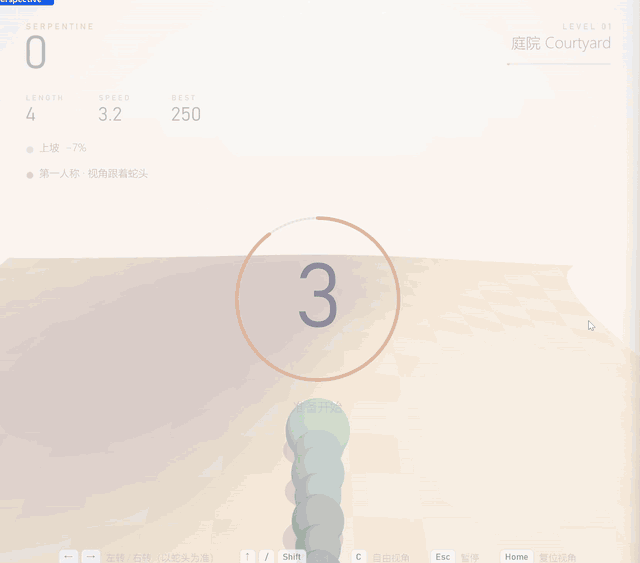
Rebound 回弹：立面里的打砖块
这个是四款里我最喜欢的，上手简单，打起来很爽。方向键或鼠标控制挡板，空格发球；过程中会掉落多球、穿透、慢速等道具。砖墙也能和立面的分格联系起来，老板模式就变成立面研究。这个游戏也可以自定义砖块排布等。
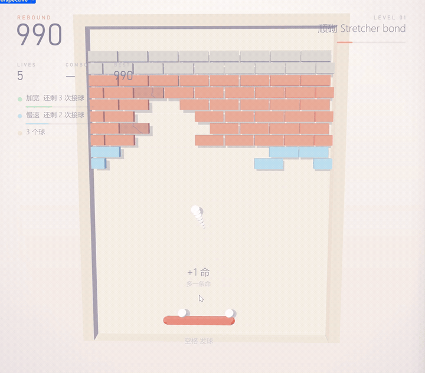
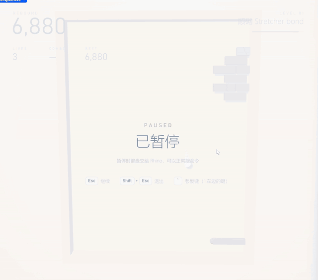
Swift 雨燕：穿过建筑剖面
最后一个类似 Flappy Bird，空格或鼠标左键控制振翅，从建筑剖面的洞口穿过去。开头难度已经调低了一些，不过我这次试玩还是很快就挂了，障碍参数也可以改。按老板键，则切成剖面的光照、气流示意。
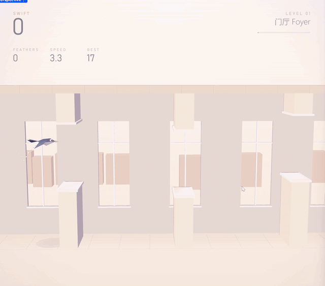
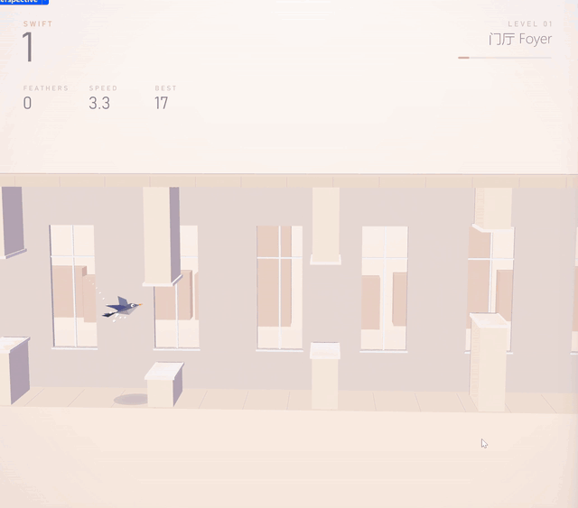
自动发布
做完之后，我让 Agent 帮我把插件发布到 food4Rhino 和 Rhino 的 PackageManager。大家可以自行搜索安装，本期演示的是 1.0.1 版本。food4Rhino 页面链接也放在文末。
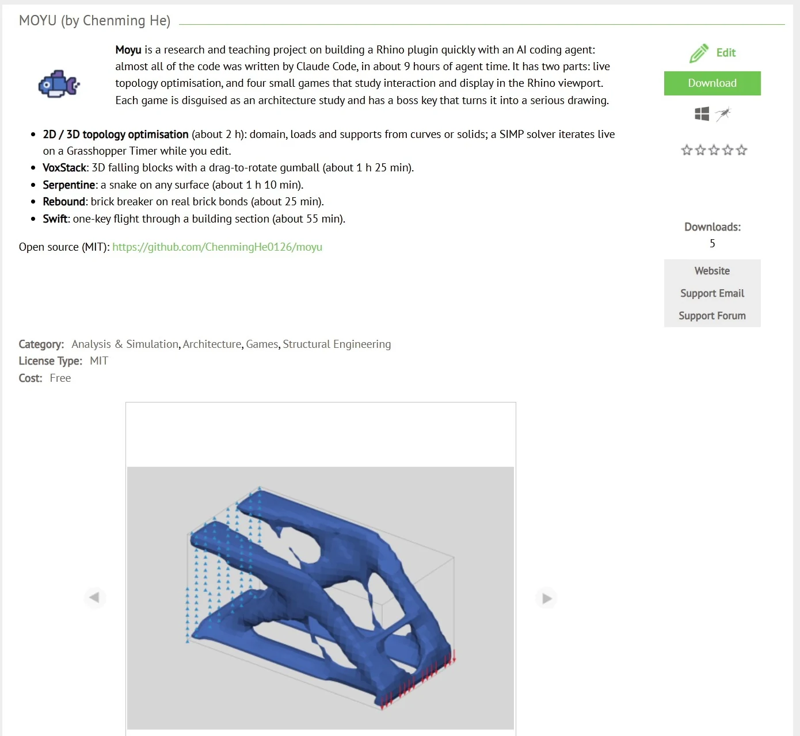
在 Rhino 命令行输入 _PackageManager，搜索 moyu，安装后重启 Rhino。
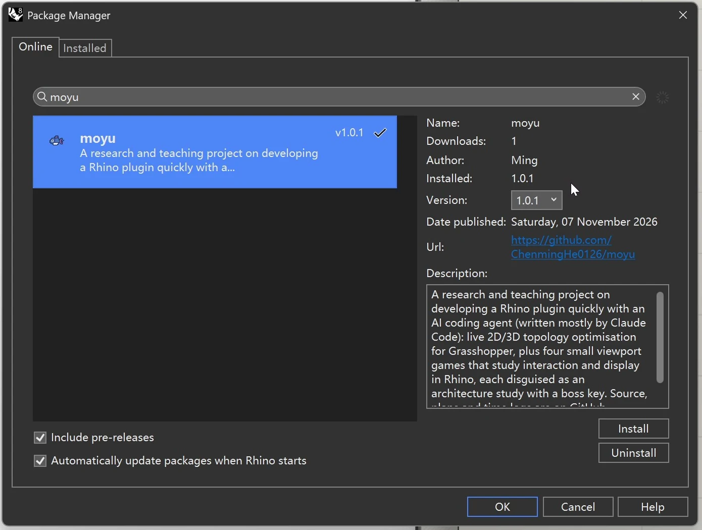
安装完成之后，找到 Examples 组件，直接在面板里选案例，就不用去系统目录深处找 GH 文件。游戏组件下方也有 Run／Stop，点一下就能开始或结束。
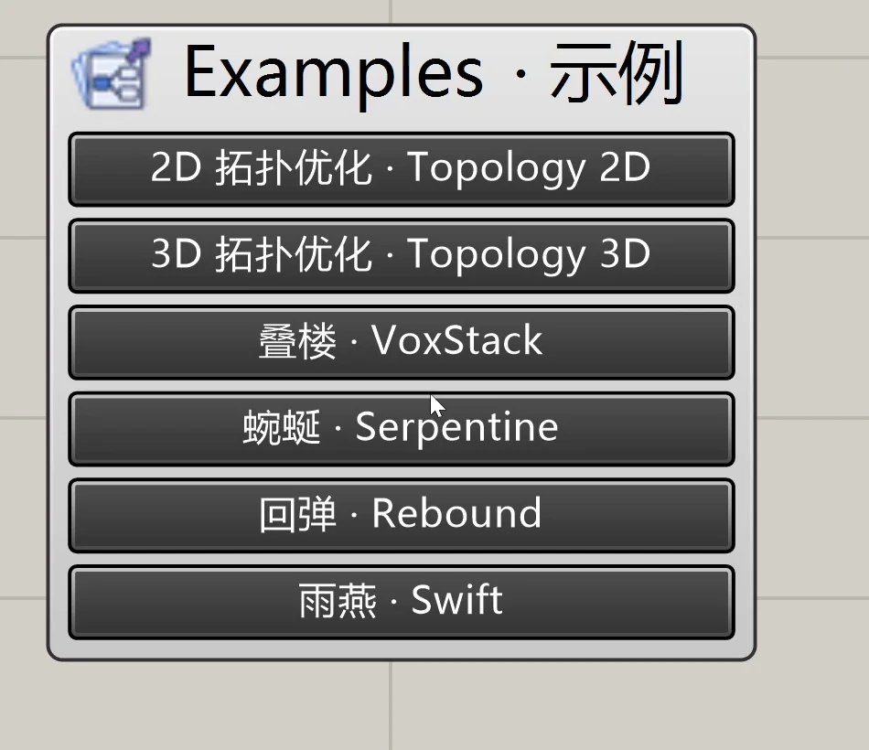
另外，想看源码的话，代码、文档和开发记录也都放在 GitHub，链接同样附在文末。
时间上，整体第一版开发约 9 小时，后续更新约 3 小时，都是分散在几天的业余时间里让 AI 跑。这里主要记录的是 Agent 执行的时间。
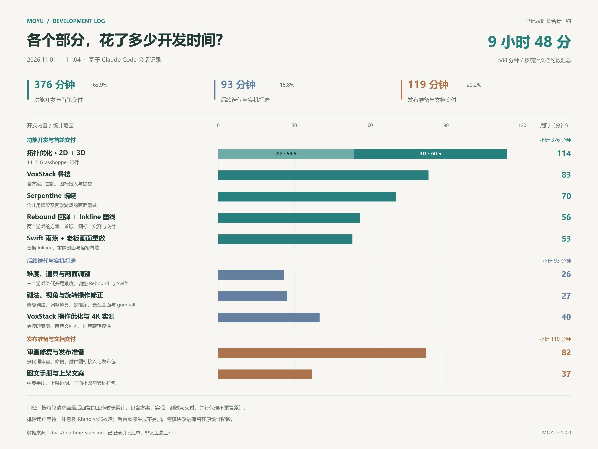
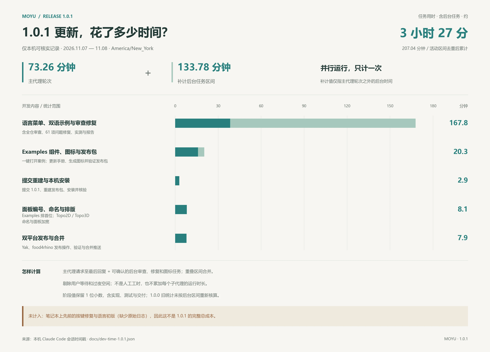
我这次最强烈的感受是，也许以后大家都要向产品经理的角色转型。设计师可以把更多精力放在发现问题、描述想要的行为，以及判断结果上。工作里总有一些反复操作的小麻烦，以前可能因为不值得专门写一个插件，就一直手动做。现在可以先把需求交给 Agent，做一个能跑的原型，试过以后再继续改。
本期分享就到这里。如果你觉得不错的话，请给我点赞、多多分享吧！感谢！
链接
Hi everyone! Last time, I shared how I used AI with Rhino MCP to model directly in Rhino and work more efficiently. But AI can do much more. We can also ask an agent to develop custom GH or Rhino plug-ins for the things we need in our everyday work.
This time, I want to share how I developed a little plug-in called Moyu—Chinese for slacking off—without writing a single line of code or making a single image. I basically chatted with an agent and told it what I wished for. Half of the plug-in is serious 2D and 3D topology optimization; the other half is a collection of games you can play inside Rhino, complete with a boss key to switch instantly between the game and a work screen. I handed the coding, testing, icons, documentation and publishing to AI. Here is how it went.
Topology optimization
The initial prompt
I started with an empty GitHub repository and selected its local project folder in Claude Code. My setup was Rhino 8 and Grasshopper on Windows, and I expected it to start from Rhino's GH development template. I had already connected Rhino MCP, so the agent could open the software, operate it and check the results. The main model I used this time was Opus 5.5 Extra.
I had written a similar topology optimization plug-in before, so I had a rough idea of what I needed. This time, I specifically asked the agent to implement it independently, starting with 2D pixels and then expanding to 3D voxels. Below is the request I actually submitted. It is very conversational and has quite a few typos, but AI is still good at making sense of it.
我想你帮我使用rhino GH开发模版 写一个运算拓扑优化的插件 先从2D pixel工作流开始 2D放在一个category里 有Load support boundary area matrerial之类的限制conditionde components 然后所有这些condition 都被放入一个solver里进行运算 这个solver是被trigger进行驱动的 所有的comoponent先不画icons 你到时候整理一个prompt 我用来在gpt里创建icons （不要参考我的论文torchsharp）solver之后 再加一个visuliaztion的component来显示结果
The most useful part of that request was breaking down the workflow: Boundary defines the design domain; Load and Support specify loads and supports; Area marks regions to preserve or keep empty; and Material supplies the material parameters. These conditions go into the Solver, and Visualization displays the result. The Solver is driven by a Trigger, making it easy to watch the changes one iteration at a time.
For the first round, I focused on getting the functionality working and left the icons for later. I asked Claude Code to summarize what each component did, then passed that to Codex to design the icons. Claude Code only needed to describe each component's function, specify a blue-and-white or blue-and-purple palette, and produce a prompt. I fed that prompt to Codex and let it work out the design. Finally, I asked the agent to split the image into the small transparent icons GH needs and add them to the plug-in.
There was one requirement I only thought to add after the first round: prepare the GH test files as well. A pile of components would still leave me wiring them together and guessing the parameters. If the agent connects complete examples and adds notes, I can open a file and test it straight away.
Compiling and opening the examples
The agent first inspected the repository and GH template, separated the condition components, SIMP solver and visualization, then wrote the code, compiled it automatically and ran checks. It finished by putting together a workflow report and the icon prompt. About an hour later, the 2D part was working, with test examples ready to open.
The agent writes and compiles the code automatically, producing a .gha file. To use it, Grasshopper needs to know where to find it. You can copy the plug-in into GH's Libraries folder manually, or enter GrasshopperDeveloperSettings in Rhino's command line and add the build output folder to Library Folders. GH searches these folders and loads the plug-ins when it starts, so you do not have to copy the file again after every build.
For this project, the output folder has the following path relative to the repository root. In the settings, select the corresponding full folder path on your computer, then restart Rhino:
src\Moyu\bin\Release\net7.0-windowsHere I have opened the GH test file. The agent created this file too.
2D topology optimization results
Here is a simple way to think about topology optimization: give it a region where material is allowed, tell it where the supports and loads are, and specify how much material it may use. The solver then searches for a suitable material distribution.
The first example is a cantilever beam: a rectangular domain, fixed at one end and loaded at the other. Turn on Run, and the Trigger advances the iterations. You can also switch to manual operation and set Steps to 1 to inspect one step at a time. It starts with a uniform field of gray pixels. Gradually, the material concentrates into a few clearer paths.
The second example adds a hole, preserved regions and different supports: a pin on one side and a roller on the other. Area lets you specify where material must remain and where it is not allowed. With a hole in the middle, the material reorganizes around it, forming branching paths above and a tie below.
The third example is an irregular L-shaped bracket with a bolt hole. Again, I define the boundary, supports and loads, then watch the optimization. It can extract outline curves as well as display colored pixels, so I can create surfaces, extrude them and bring the result back into my own modeling workflow. A tool like this is useful for exploring mechanical parts or structural concepts.
I was honestly amazed by the overall result of this round. In about an hour of development, AI had implemented the whole 2D part and prepared some very representative test examples. It is remarkable how much it could work out.
3D topology optimization: the same workflow, from pixels to voxels
Once the 2D version worked, I asked it to expand to 3D, keeping the conditions → Solver → visualization structure and preparing 3D test files and icons as well. This time, the design domain is a closed solid, and the material is represented by voxels rather than pixels.
The process was the same: ask the agent to develop the components, then generate their icons and test files.
The agent gave me three examples again. The first is a 3D cantilever beam. Here is the optimization process, with the structure gradually taking shape.
The second example optimizes the supports of a table. I specify the parts to preserve and let it optimize the rest. The status shows that this example converged after 35 iterations, leaving these tree-like supports.
The L-shaped bracket works too. Increasing Resolution gives a finer result, but also makes the computation slower. At this stage, the plug-in is suitable for learning and concept exploration; real engineering applications still need dedicated analysis and verification. Of course, this was only the first development round. Getting this far already felt impressive. I wonder how long it would have taken to write it all by hand.
Next, some games for taking a break in Rhino
Topology optimization was a fairly serious request. Next, I wanted to try something more personal and a bit more imaginative: games for slacking off inside Rhino.
For the first game, I thought of a 3D version of Tetris. I gave it a few core requirements: include a default set of blocks, but let users draw their own voxel Units; clear a layer and score points when it is full; use keyboard controls; and, most importantly, include a boss key that switches to a screen that looks like an architectural massing study. I left the remaining details for the agent to plan, as long as it made the game fun.
现在我做一些在rhino里摸鱼的游戏 这些游戏都是以GH plug-in形式存在 也就说在moyu下再多开几个categories来做 第一个我想做的游戏是3D体素消除游戏 类似于俄罗斯方块 不过是3d版本 交互方式也许是 系统会自带一些默认的体素块 类似于平面的俄罗斯方块 L型 I型 之类的 但是用户也可以自己画一些由标准voxel堆砌出来的体素unit 反正每次每一层堆满就消除 基本原理还是和俄罗斯方块相同 也需要计分 最好是用键盘在操作移动 你计划一下 最重要的是这是一个摸鱼时间玩的游戏 所以要有老板键 可以快速切换成假装在做massing 形体研究的状态 具体细节你来安排 但是要有趣好玩
According to the development record, the agent took about 1 hour and 13 minutes to get from the initial idea to a playable first version: roughly 31 minutes for the proposal and 42 minutes to develop the playable v1. These figures cover the agent's execution stages. They do not include all the time I spent reviewing the results, playing the game and thinking about what to try next.
In the first proper playtest, I could already rotate and drop blocks and clear layers. At first, I found the 3D rotation a little complicated and the falling speed a little fast. It took me a while to get used to it and clear a layer. I kept refining the interface and controls afterward. Alongside the keyboard controls, it now has the Gumball Rhino users will recognize: drag a ring to rotate the block.
You can also add custom Units. Draw your own massing block, connect it to Voxel Unit and Unit Library, and it becomes part of the block library.
Press the boss key, `—the key below Esc and to the left of 1—and the game switches to a massing-study screen, making it look as if I am still hard at work. Press it again to return to the game. All four games use this idea, each with its own work screen. These screens are part of the game design too.
Adding three more games
Over the next few days, I added three more in bits of spare time. They all run in the Rhino viewport, and each has its own “work screen.”
Serpentine: Snake on a surface
The default terrain is undulating, but you can also connect your own Surface. Different fruits have different scores, with bonuses for eating them in succession and speed increases along the way. Press C to switch between a first-person follow view and a free view of the whole terrain.
Press the boss key, and the game becomes a landscape study with terrain, paths, trees and analysis diagrams.
Rebound: brick-breaking in a facade
This is my favorite of the four. It is easy to pick up and satisfying to play. Use the arrow keys or mouse to control the paddle, and Space to launch the ball. Power-ups drop as you play, including multiball, piercing and slow motion. The brick wall also relates to facade divisions, so boss mode turns it into a facade study. You can customize the brick layout too.
Swift: flying through an architectural section
The last game is similar to Flappy Bird. Press Space or the left mouse button to flap through openings in an architectural section. I had already lowered the starting difficulty a little, but I still died pretty quickly in this playtest. The obstacle parameters are adjustable too. Press the boss key, and it switches to lighting and airflow diagrams of the section.
Automated publishing
Once it was ready, I asked the agent to help publish the plug-in to food4Rhino and Rhino's PackageManager. You can search for it and install it yourself. The version demonstrated here is 1.0.1, and the food4Rhino link is at the end of the article.
Enter _PackageManager in Rhino's command line, search for moyu, install it, then restart Rhino.
After installation, find the Examples component and choose an example directly from its panel. There is no need to dig through system folders for the GH files. The game components also have Run/Stop controls underneath, so one click starts or ends a game.
If you want to look at the source, the code, documentation and development records are all on GitHub. That link is at the end too.
Overall, the first version took about 9 hours of development, followed by around 3 hours of updates. I let AI work on it during spare time spread across several days. These figures mainly track the agent's execution time.
My strongest feeling from this project is that we may all move toward a product-manager role. As designers, we can put more energy into spotting problems, describing the behavior we want and judging the results. Work is full of small, repetitive annoyances. In the past, we might have kept doing them by hand because a dedicated plug-in did not seem worth writing. Now, we can give the request to an agent, get a working prototype, try it and keep improving it.
That is all for this one. If you enjoyed it, please give it a like and share it around. Thanks!